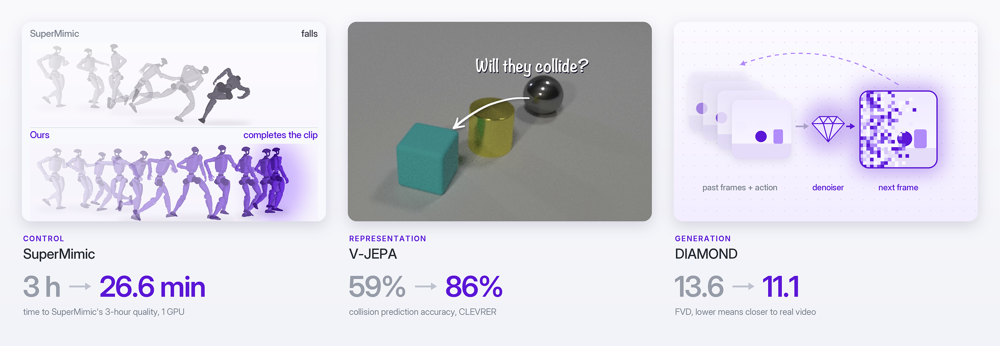
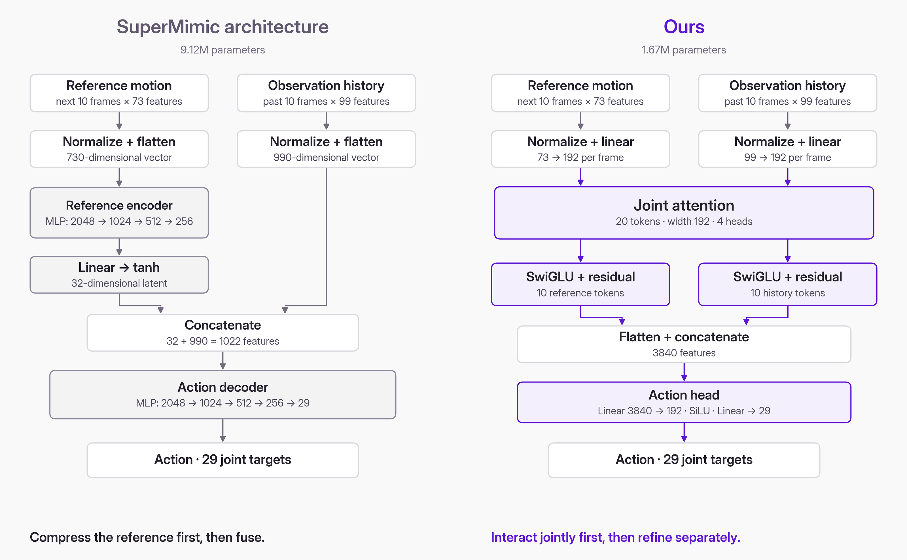
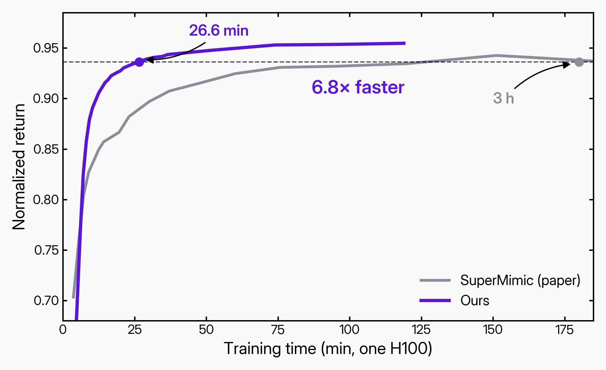
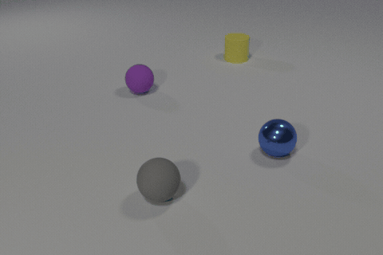
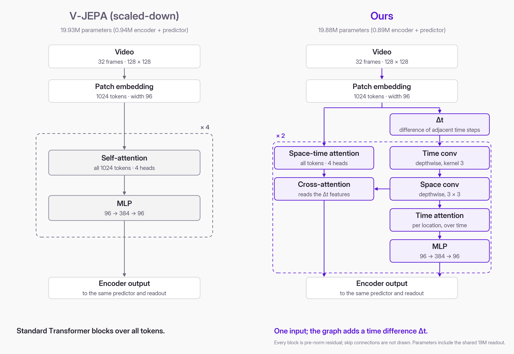
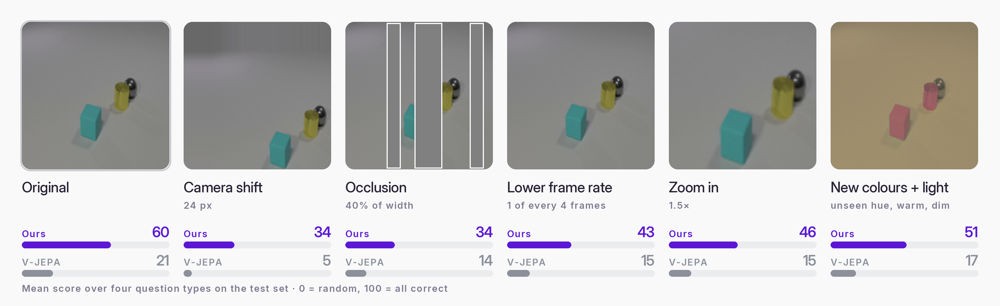
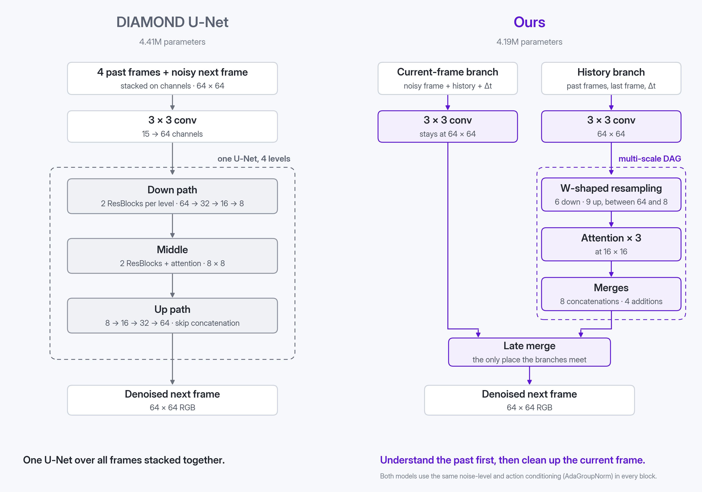

How Much Better Can World Models Get by Changing Only the Architecture?
1 MetaCircle AI2 College of AI, Tsinghua University3 Department of Physics, Fudan University
Most world models fall into three categories. Some learn the dynamics of an environment and use them to train embodied control policies, some learn how the physical world works from video, and some directly generate future frames. We picked one representative of each kind and changed nothing but its network architecture. On average, performance improved by 49.6%.

Control. SuperMimic trains humanoid robots with a differentiable world model, cutting SONIC's 7 days on 128 GPUs to 3 hours on a single GPU. We redesigned its policy network and, together with some engineering optimizations, brought those 3 hours down to just 26.6 minutes.
Representation. V-JEPA is Meta's video world model: it learns how the physical world works from large amounts of unlabeled video by predicting the masked parts of a clip. On the 3D physics dataset CLEVRER, a better encoder architecture alone pushed collision-prediction accuracy from 59% to 86%.
Generation. DIAMOND uses a diffusion model to generate Atari frames one by one, and its agent learns to play entirely inside this "imagined" world. Keeping the training and evaluation protocol unchanged, we swapped in a new denoiser and generated noticeably more realistic video, with fewer parameters: FVD dropped by 18.4% and per-frame LPIPS by 7.4%.
These three results point to the same thing: beyond data, scale and training methods, the architecture of world models itself is still far from fully explored.
The Overlooked Piece
World models have advanced rapidly over the past two years. SuperMimic used a differentiable world model to teach a humanoid robot more than a hundred thousand motions on a single GPU; V-JEPA 2 learned physical intuition from massive amounts of video; Genie and DIAMOND can directly generate interactive virtual worlds.
This progress has been driven mainly by more data, larger scale, and better training objectives and methods. The network architecture itself has rarely taken center stage: SuperMimic's policy is a plain MLP, V-JEPA's encoder is a standard ViT, and DIAMOND's denoiser is a standard U-Net. Architecture is often a "good enough" default rather than something carefully refined.
We wanted to know: if we change only the architecture, how much better can world models get?
For some time now, we have been building a meta-model. Given a task, it designs a network architecture specifically for that task. The new architectures in the three examples below all came from it.
Example 1: SuperMimic, a World Model for Control
SuperMimic tackles motion tracking: given a clip of human motion, a Unitree G1 humanoid has to reproduce it in physics simulation. It first learns a differentiable world model that predicts the robot's next state after an action. The policy is then rolled out for 32 steps inside this world model's "imagination," and the tracking error is backpropagated straight into the policy. With this approach, 3 hours of training on a single H100 is enough to surpass what SONIC achieved with 7 days on 128 GPUs.
The original architecture: compress first, then decide
At every step, the policy looks at two things: the reference motion for the next 10 frames (how the robot should move) and its proprioceptive observations from the past 10 frames (how it is actually moving). The original architecture first uses a four-layer MLP to compress the 10 reference frames into a single 32-dimensional vector. It then concatenates this vector with the flattened observation history and passes the result to another four-layer MLP, which outputs target angles for the 29 joints. The whole policy has about 9.12 million parameters.
Our architecture: interact jointly first, then refine separately
We turn the 10 reference frames and the 10 observation frames into 10 tokens each, one token per frame. All 20 tokens first pass through a single joint-attention layer: reference frames and history frames can attend to each other, but each group has its own Q/K/V projections and so keeps its own identity. The two groups then split, and each is refined by its own SwiGLU layer. Finally, all tokens are flattened and a small MLP outputs the action.
There is no 32-dimensional bottleneck, yet the new policy has just 1.67 million parameters, about a fifth of the original.

Results
We trained both architectures with exactly the same recipe for 45 minutes each and then evaluated them (Table 1). The metric is return, which measures how accurately the robot tracks the motion; a perfect score is 1.
Table 1 The two policy architectures under the same training recipe. Learning rate 8e-4, EMA 0.98, 45 minutes of training on a single A100, evaluated on 10,000 motions drawn by stratified sampling. A perfect return is 1.
| Policy architecture | Mean return | Parameters |
|---|---|---|
| SuperMimic original | 0.897 | 9.12M |
| Ours | 0.938 | 1.67M |
Because each of its steps is faster, the original architecture fit over 1,000 more training steps into the same 45 minutes, and still finished clearly behind.
With some further engineering optimizations on top of this recipe, our architecture matches the return of SuperMimic's 3-hour training in just 26.6 minutes on a single H100 (Figure 3). The left panel of Figure 1 shows a concrete example: on a clip where the robot dodges sideways mid-run, spins 270° and keeps running, the original architecture falls halfway through, while ours runs it to the end.

Why it works
The original architecture carries a hidden assumption: before the policy has even seen the robot's current state, it must boil the next 10 frames of motion down to a 32-dimensional vector. But which parts of the upcoming motion matter depends precisely on the robot's state at that moment. Intuitively, when the robot is about to lose its balance, what matters most is where its feet land in the next frame or two; when its posture is stable, it can afford to look further ahead.
Our architecture reverses this order. History frames and reference frames interact directly first, so every observed frame can find the future frames relevant to it; only then is each group refined on its own. What to keep is decided after each side has seen the other, not before.
Example 2: V-JEPA, a World Model for Representation Learning
Our second example comes from video world models. We use CLEVRER, a popular 3D physical-reasoning dataset: several objects of different shapes, colors and materials move across a tabletop and collide with one another, amid shadows, reflections and occlusions (Figure 4). The model watches 32 frames of video and has to predict what will happen over the next 16.

Training follows the V-JEPA recipe in two stages. First comes self-supervised pretraining on 8,000 CLEVRER videos: part of each clip is masked, and the model predicts the masked content in representation space, without any labels. After pretraining, the whole model is frozen, and only a readout network on top of its outputs is trained to answer questions. The readout network, its training data and its number of epochs are identical for both models, so how well each one answers depends only on how well pretraining taught it the physics in the videos.
The original architecture: a standard Transformer
The baseline is a scaled-down V-JEPA. Videos are resized to 128×128 and cut into spatiotemporal patches; each patch becomes a token, and the tokens pass through 4 standard Transformer blocks. All tokens attend to one another in a single sequence, so the positions, motion and interactions of objects all have to be learned by attention on its own.
Our architecture: one extra frame difference in the computation graph
Our architecture takes exactly the same input as the baseline: the same patch tokens. The difference lies in how the tokens are processed once they enter the network (Figure 5). The encoder is a small computation graph applied twice, built entirely from common operators:
- Frame difference Δt: tokens at adjacent time steps are subtracted. This is followed, in order, by a convolution along time, a convolution along space, self-attention along the time axis only, and an MLP.
- Spatiotemporal self-attention: self-attention over all space-time tokens, followed by a cross-attention that reads features from the nodes downstream of Δt.
The outputs of the two parts are merged and passed to the same predictor and readout network as the baseline.

Results
Both models use the same data splits, the same number of pretraining epochs and the same readout network, and their total parameter counts are about the same. There is just one difference: the baseline uses learning-rate warmup, because without it its representations collapse early in training; our architecture doesn't need it. Once the readout network has been selected on the validation set, it is evaluated exactly once on 1,000 previously unseen test videos (Table 2).
Table 2 Collision prediction on CLEVRER: will a collision happen within the next 16 frames? The test set has 1,000 videos. Accuracy is the average of the accuracies on the collision and no-collision classes (balanced accuracy), so chance is 50%. AUC is 50 at chance and 100 at best. Parameter counts are the sum of the pretrained model (encoder and predictor) and the readout network; the two readout networks are identical.
| Encoder architecture | Accuracy | AUC | Parameters |
|---|---|---|---|
| V-JEPA (scaled-down) | 59.0% | 67.0 | 19.9M |
| Ours | 85.7% | 93.4 | 19.9M |
Same parameter count, yet about 27 points more accurate.
More questions, harder tests
Predicting whether objects will collide isn't enough. We also had both models answer three other kinds of questions: how many collisions there will be, when the first one happens, and where on the table it takes place. We then applied perturbations never seen during training to the test videos: shifting the frame, partially occluding it, lowering the frame rate, zooming in, and switching to new colors and lighting (Figure 6). The questions and answers stay the same; only the pixels change.

Table 3 Average score over the four question types, where 0 is chance and 100 is all correct. "With perturbations" averages the five kinds of perturbation, each at its strongest level. "All correct" requires every question about a video to be answered correctly, and is likewise rescaled so that 0 is chance.
| V-JEPA (scaled-down) | Ours | |
|---|---|---|
| Four-question average, original videos | 21.1 | 60.3 |
| Four-question average, with perturbations | 13.3 | 41.8 |
| All correct, original videos | 13.1 | 51.8 |
| All correct, with perturbations | 6.1 | 35.6 |
Under perturbations, the baseline's all-correct score falls almost to chance, while ours keeps about 70% of its score.
Why it works
Both models see exactly the same information: the same video and the same patch tokens. Our architecture adds no extra input; the only difference is how that information is processed.
Predicting collisions comes down to how objects move: which way they are heading, how fast, and whether they will meet another object. This information is already hidden in the differences between adjacent frames. In principle the original architecture could compute it too, but attention would have to learn on its own to "compare adjacent frames" among a huge number of nearly identical tokens, which is slow and hard.
Our architecture writes this step directly into the computation graph. It first compares adjacent frames, then uses local convolutions and attention along the time axis to turn these changes into coherent motion. Spatiotemporal self-attention handles the global relations and reads the organized motion information through cross-attention. The information is the same; it is simply organized in a form better suited to answering physical questions. The baseline, by contrast, knows where objects are (it also does well on the "where is the collision" question), but it struggles to predict how they will move.
Where this architecture came from
This architecture was not designed for CLEVRER. The meta-model first searched for architectures in a much simpler 2D world: a red ball moves at constant speed, and the task is to tell whether it will hit a stationary block. There, the new architecture raised accuracy from 67.4% to 95.8%. When we moved it to CLEVRER, we left its structure untouched; we only switched the input to 128×128 video and trained it from scratch on the new data. A structure found in a simple world still holds up in far more complex 3D scenes.
Example 3: DIAMOND, a World Model for Generation
DIAMOND (NeurIPS 2024) is a world model built on a diffusion model. Given the last 4 game frames and the player's action, it generates the next frame; feeding that frame back in as input lets it "imagine" the game frame by frame. DIAMOND's agent learns to play entirely inside this imagined world, so how accurately the frames are generated directly determines what the agent can learn.
We chose the Atari game Krull. To compare the world models in isolation, we used DIAMOND's officially released agent to collect about 500,000 frames from the real game and split them by episode into training, validation and test sets. Both models use exactly the same training recipe: the EDM diffusion objective, 3 sampling steps, and 100,000 training steps. For evaluation, each model starts from real test frames, is given the real action sequence, and imagines 50 frames in a row, which are then compared with the real ones.
The original architecture: all frames stacked and processed together
DIAMOND's denoiser is a 4-level U-Net. The 4 past frames and the noisy current frame are stacked along the channel dimension into a single image, which is handled by the same convolutions from the very first layer: downsampled together to 8×8, then upsampled together back to 64×64. The noise level and the action are injected into every residual block through normalization layers. The whole network has about 4.41 million parameters.
Our architecture: understand the past first, then clean up the current frame
Our architecture has two branches (Figure 7).
One branch sees only the clean history: the past frames, the last frame, and the difference between adjacent frames, Δt. It does almost all of the computation, repeatedly downsampling and upsampling between 64×64 and 8×8 in a W-shaped multiscale structure, and applies attention three times at 16×16.
The other branch takes the noisy current frame (stacked with the history and Δt), passes it through a single convolution, and stays at full resolution throughout. The two branches meet only once, at the very end, to output the denoised next frame.
The new architecture has about 4.19 million parameters, slightly fewer than the original.

Results
Table 4 Imagination quality on Krull. 512 fixed test clips, each imagined for 50 consecutive frames starting from real frames; averages over 3 seeds. LPIPS measures the perceptual difference between each frame and the real one, and FVD measures the gap between the generated video as a whole and real video. Lower is better for both.
| Denoiser | LPIPS ↓ | FVD ↓ | Parameters |
|---|---|---|---|
| DIAMOND original | 0.0383 | 13.62 | 4.41M |
| Ours | 0.0355 | 11.11 | 4.19M |
With fewer parameters, our denoiser cuts FVD by 18.4% and LPIPS by 7.4%.
Why it works
The original architecture asks the same convolutions to do two jobs at once: infer how things move from the past few frames, and recover the details of the current frame from noise. The first needs a large receptive field and multiple scales; the second needs pixel-level detail preserved. Inside one network, the two get in each other's way.
Our architecture separates them. The deep multiscale branch sees only the clean history and focuses on inferring how the scene will change next; the noisy current frame takes a full-resolution shortcut and draws on that conclusion only at the very end.
The Δt in this architecture, which subtracts adjacent frames, is the same frame difference used in Example 2. One task is about understanding video, the other about generating it, and on these two completely different tasks the meta-model picked the same operation independently.
Summary
The three examples come from three kinds of world models: one controls a humanoid robot in physics simulation, one learns how the physical world works from video, and one directly generates future frames. We changed neither the data nor the training objective, only the architecture of a single network. For SuperMimic, return rose from 0.897 to 0.938 in the same training time, and with engineering optimizations on top, matching the original 3-hour training took just 26.6 minutes. On CLEVRER, collision-prediction accuracy jumped from 59% to 86%. For DIAMOND, the FVD of generated video dropped by 18.4%.
The three new architectures also have something in common. The original architectures all take a one-size-fits-all approach: SuperMimic squeezes the reference motion into a 32-dimensional vector before concatenating it with everything else; V-JEPA sends every token through the same kind of block; DIAMOND stacks the noisy current frame and the history into one image and processes them together from start to finish. The new architectures instead let each kind of information be processed in its own way first, and only then interact at the right place. None of these designs is complicated, and they are all built from common components, yet none of them appeared in the original architectures.
This is exactly what we set out to show: beyond data, scale and training methods, the architecture of world models has just as much room to improve.
What's Next
These three examples are only the beginning. We are now applying the meta-model to many more fields, including time series, neural quantum states and medical imaging, and we will share results as they come in.
If you're interested in architecture design too, or have a task you'd like the meta-model to try, we'd love to hear from you.
Citation
If you find this post useful, please cite it as:
@misc{huang2026betterworldmodels,
title = {How Much Better Can World Models Get by Changing Only the Architecture?},
author = {Huang, Bangzhe and Liu, Ziming},
year = {2026},
month = nov,
howpublished = {MetaCircle AI blog},
url = {https://metacircleai.github.io/better-world-models/}
}